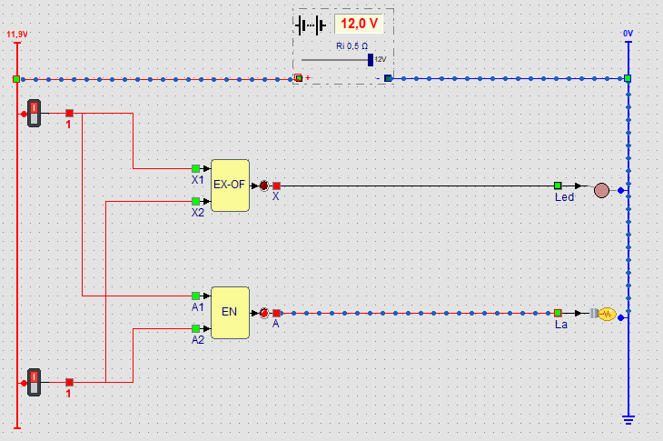

EN-poort: alleen aan als beide
ingangen aan zijn. Beide schakelaars gaan dus naar beide poorten.
EN-poort: alleen aan als beide
ingangen aan zijn. Beide schakelaars gaan dus naar beide poorten.Leerpad › Rekenen met poorten › Les 26 van 28

Een computer rekent met alleen 0 en 1. Tel je twee bits op, dan zijn er maar vier mogelijkheden: 0 + 0 = 0, 0 + 1 = 1, 1 + 0 = 1 en 1 + 1 = 10 (twee in binair). Bij 1 + 1 schrijf je 0 en onthoud je 1, net zoals bij 5 + 5 = 10 in het tientallig stelsel. Dat onthouden cijfer heet de overdracht (in het Engels carry, C). Het andere cijfer is de som (S).
| A (bovenste schakelaar) | B (onderste schakelaar) | Som S (led) | Overdracht C (lamp) |
|---|---|---|---|
| 0 | 0 | 0 | 0 |
| 0 | 1 | 1 | 0 |
| 1 | 0 | 1 | 0 |
| 1 | 1 | 0 | 1 |
Vergelijk de kolom som met de tabellen bij Verwerking: dat is precies een
EX-OF-poort. Die is aan als
precies één ingang aan is. De kolom overdracht is een
EN-poort: alleen aan als beide
ingangen aan zijn. Beide schakelaars gaan dus naar beide poorten.
Vervang de EX-OF-poort door een gewone OF-poort. Bij welke stand van de schakelaars klopt de som niet meer?
Bij 1 + 1. De OF-poort zet dan ook de led aan, zodat de led én de lamp branden: dat is 11, of drie. Maar 1 + 1 is twee (10). De som mag alleen aan zijn als precies één ingang aan is, en dat doet de EX-OF-poort.